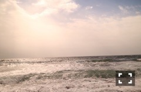
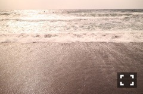

| 2016/10 13 Thu | 斎藤ちはる 波の音。 |
ちはるーむへようこそ！
今日の #chihashot

父の趣味のサーフィンに
海の写真が撮りたいから！！と
私も付いていって撮った写真です◎
逆光だったからその場では
どんな写真が撮れているのか
あんまり分からなかったけど
こうして転送してみると
自分でも中々いい写真が撮れたかも！と
少し嬉しくなったりもする( ◦˙ ˙◦ )
足跡と引いていく波。
なんとも色合いは渋いけど
それも味だと思う。
すぐに消える足跡が
儚さと寂しさを感じさせる。

綺麗に引いていく波。
波の感じや少し跳ねてる水が好き。
空同様に好きな海。
埼玉は内陸県で海がないので
海を見るとどうしても
心がワクワクしてしまう！
海をぼーっと見てると
波の音や風の音や鳥の音や砂の上を歩く音
沢山の音が聞こえるの。
その音に耳を傾けながら
広い空と広い海を見ていると
心が洗われた気がしてスッキリする！
やっぱりたまには自然に触れた方が
いいんだな、と実感します :-)
中々自然の多い場所に行けない方は
私の撮った写真で
少しでもそんな気分になってくれたら
嬉しいです◎
季節からか、グアムの海より
日本の海の方が
少しだけ寂しげな感じがする。
寂しげなものが好きなのかな(_ _).｡o○
-------------------------♡
♬ ChihaMusic
「モットー。」阿部真央さん
とにかく歌詞が良い。
中学生の頃から、何度この歌に
勇気をもらえたか。
どこの歌詞がいいかは
中々決め難いんだけど
"胸裂けるような言葉にさらされ
涙こぼれても 忘れないで
君想って 歌う奴だっている"
どんなに辛いことがあっても
ファンの方がいるから
頑張れているので
やはりこの歌詞は大切。
あべまさん好き！憧れ！
私の好きなものを
好きなだけ語れることは嬉しい！
それに対して共感してくれる方が
いてくれたらもっと嬉しい。
コメントいつも読んでます◎
ありがとうございます\( ˆ ˆ )/
おやすみ〜
斎藤ちはる